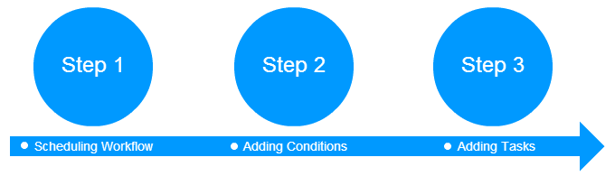
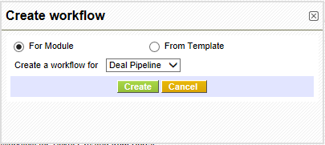
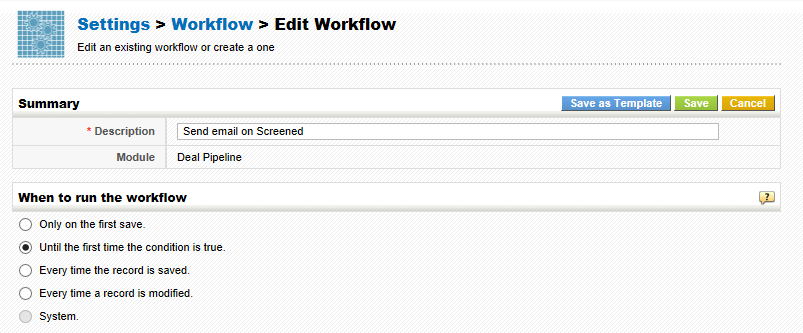
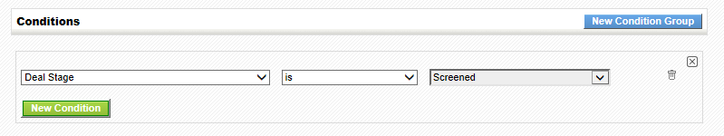
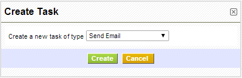

Workflows will streamline your business by automating operations like sending emails, creating activities, updating fields, etc. As tasks are performed automatically, you need not have to execute them manually.
Follow few simple steps to setup a workflow
- Click gear icon
 icon in the top right
icon in the top right
- Click CRM Settings
- Click Workflows under Other Settings
- Click New Workflow
Step 1: Scheduling workflow
You'll need to provide basic details that include selecting a module and scheduling workflow.

Workflows gives you the ability to perform different operations on the selected module such as: sending an email, updating fields, creating a whole new record in another module, creating an event or todo, etc. This answers the question why should we select a module here?. We will discuss the actions that are triggered by the workflows in detail in Step-3.

You'll need to specify when would you like to run the workflow. Workflow running conditions are all predefined and you only have to choose the condition that suite your requirements.
- Only on the first save- Triggers workflow on your first save ie., when you create a new record.
- Until the first time the condition is true- Triggers workflow if your condition(Step-2) will be true. Once executed, your workflow will not trigger on the same record again. However, it will trigger actions on other records in the selected module.
- Every time the record is saved- Triggers workflow every time you will save your record—including first save.
- Every time the record is modified- Triggers workflow every time you edit and save your record—excluding first save.
- System
Step 2: Adding Condition(s)
Workflows will be executed on the records in the selected module. More often, you might only need to perform operations on selected records in that module. This is where conditions will come into play. Workflow will only be executed on the records that satisfy the condition specified by you.
For instance, I would like to create a workflow on Deal Pipeline module. I want the workflow to execute operations on records where 'Deal Stage' is 'Screened'. So, my condition will be Deal Stage is Screened

You'll find two different options while defining conditions. The functionality of the conditions is described below with an example
1. All Conditions : Filters records based on AND condition.
For instance,
Condition 1
AND
Condition 2
AND
Condition 3
Displays the results if and only if ALL conditions are matched. If one condition is failed, other queries will not be executed.
2. Any Conditions : Filters records based on OR condition.
For instance,
Condition 1
OR
Condition 2
OR
Condition 3
Displays the results if at-least ONE condition is matched. If one query is failed, other queries will be executed.
Notes!
- By default, AND condition is enabled between ALL conditions and ANY conditions. This will help you in grouping the two conditions, altogether.
- You can provide existing or custom criteria while defining conditions.
- You can define multiple conditions for a workflow by clicking on Add Condition button.
After defining conditions, click Save
Step 3: Adding Task(s)
The actions that should be executed with the help of workflows can be configured through tasks, while previously defined steps are just to provide directions and inputs.
Click New Task button and select desired task

- Send Mail- To send an email notification
- Invoke Custom Function - To update target fields of records in a module when actions are performed on source field in a different module
- Create Event- To create a new calendar event
- Create To do- To create a new calendar task
- Update fields- To updates field(s) of selected module